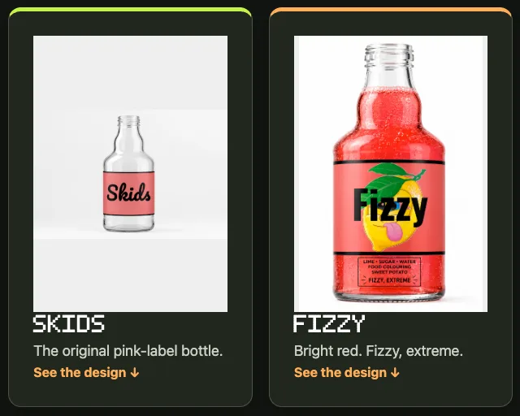

Schoolwork and confidence
Primary support, GCSE English and maths, languages, art and design, and IB or A-level Psychology.
See subjects and exam levels →One-to-one support with schoolwork, skills and confidence, from KS1 through post-16 study.
Your first session and diagnostic report are free. After that, £40 per hour.
One-to-one support from KS1 through post-16 study, built around what your child needs and how they learn.
Tell us the subject, level and what feels difficult. We match the tutor and plan the first session around that starting point.
Primary support, GCSE English and maths, languages, art and design, and IB or A-level Psychology.
See subjects and exam levels →Games, writing and design projects put skills to use in something the learner cares about.
Explore projects and learning →Online across the UK, or in person in Bristol, London and Henley, subject to tutor availability.
Real projects and tools, made for students.
GCSE English and maths
Football gives GCSE English and maths a practical purpose. What began as match predictions backed by stats has grown into previews, opinion pieces and analysis, alongside maths recall cards.
See how our lessons work →
A football game, shaped by the changes they write down. They direct the game in writing.
See how our lessons work →


Year 8 · Writing and design
New to laptops, and writing was the last thing they wanted to do. Designing things they love made writing a tool: their own drinks brand with labels and 3D bottles, and a football game they direct in writing.
See how our lessons work →

Shared with each family's permission, with names removed.
Tell us the subject, exam board and date so we can match the right tutor.
English, Maths Foundation and Higher, Art and French. For other language exams, we confirm the course and tutor fit before booking.
Explore subjects →With Joshua: topics, past papers, mark schemes and exam technique, plus planning and feedback for the IA and Extended Essay.
Psychology support →We use focused practice and exam-condition work to see where support is needed. Other subjects and levels are discussed individually.
Clear boundary: We do not guarantee grades or qualifications. Complex needs and exceptions receive Joshua’s review before tutoring is agreed.
Tell us the broad goal and current difficulty. We will take it from there.
A proper session to get to know them, not a sales call.
Written by their tutor, read by our founder.
We review and refine their plan every week.
Pay weekly, with flexible cancelling.
After that, £40 per hour.